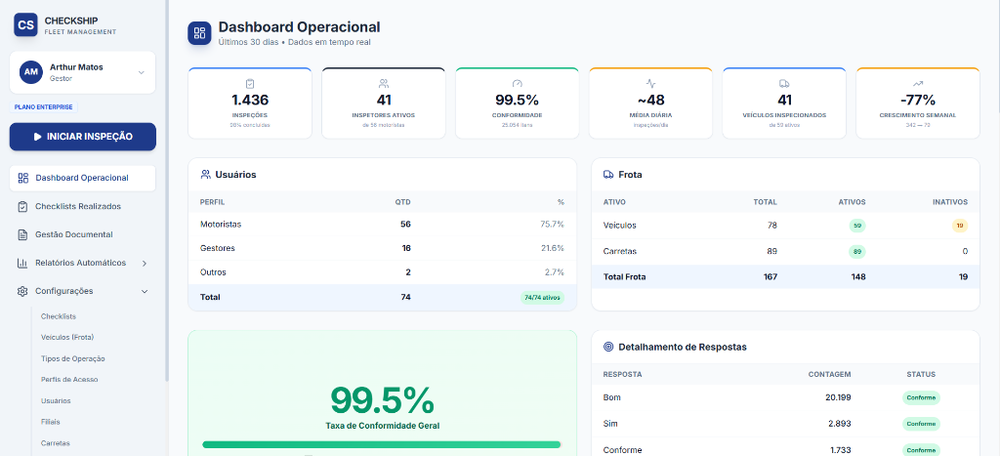
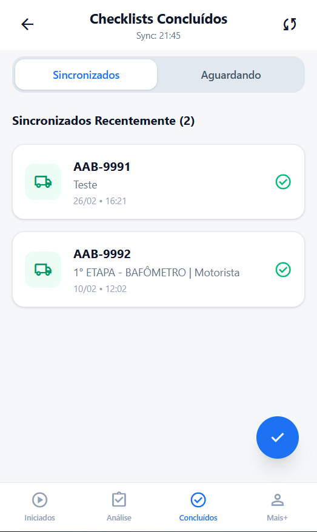
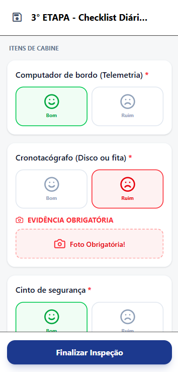
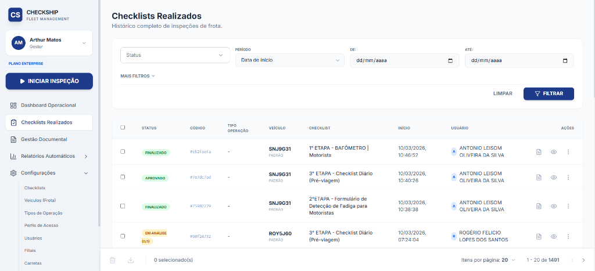

Gestão de frotas e inspeções sem falhas, sem papel e com controle total – onde a sua operação estiver.
Levamos suas rotinas de checklist do pátio à rodovia, direto para o celular do colaborador.
Garantimos que processos e normas de altíssima exigência sejam cumpridos à risca.
A integração perfeita e imediata entre quem executa (na ponta) e quem gerencia (na base).


img_mobile_list.pngControle absoluto da sua frota em uma única tela.
Identifique gargalos e itens reprovados instantaneamente.
Aja com precisão antes que o problema se torne custo imprevisto.
Todos os dados da operação, caminhões e motoristas em um só lugar.
As inspeções não param quando o sinal cai. O App salva localmente e sincroniza quando a rede volta.
Travas de sistema impedem inspeções pela metade, garantindo total conformidade no campo.

Salve a imagem do Checklist como img_mobile_form.pngAderência automática às exigências da ISO, SASSMAQ e demais normativas legais de segurança.
Histórico de inspeções salvo na nuvem de forma segura e com acesso vitalício.

Salve a imagem de Checklists Realizados como img_history.pngPrograma Estratégico para Early Adopters.
Estamos selecionando a dedo um grupo exclusivo de empresas para nossa fase inicial. Você não é um número, é um parceiro de evolução.
Feedback direto de quem opera. Suas sugestões viram melhorias reais no sistema em curtíssimo tempo. O sistema se molda a você.
Condições inatingíveis no futuro: Isenção total de taxa de implantação e suporte VIP (acompanhamento muito próximo da nossa equipe técnica).
Uma experiência ganha-ganha onde o seu feedback constante esculpe a plataforma que vai trazer extrema excelência para sua frota.
20 dias de experiência imersiva na sua operação.